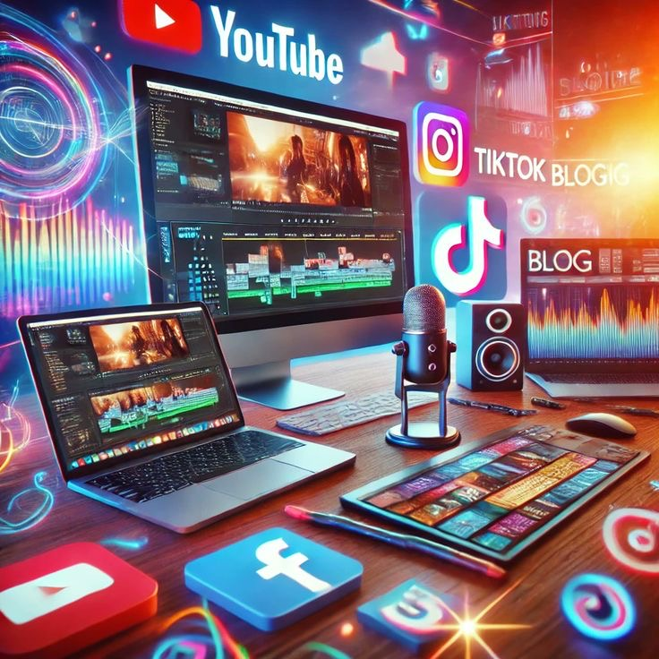
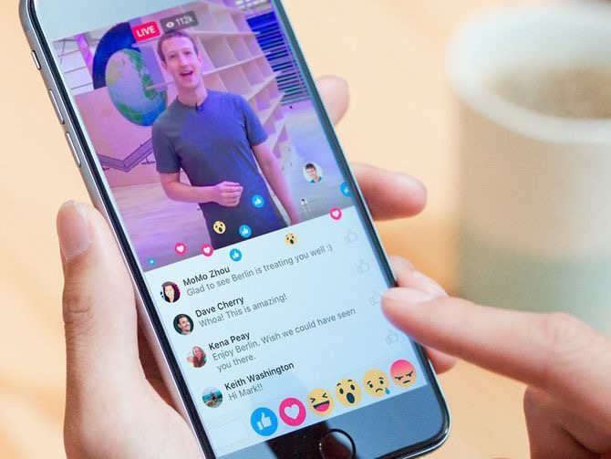
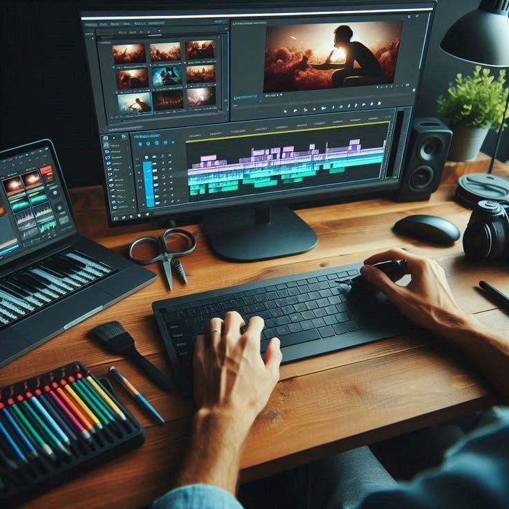
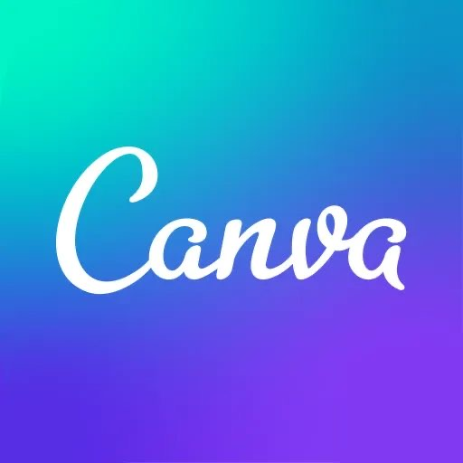

Tratamiento y edición de la imagen en movimiento. Videos.
Definición de video digital.
Los videos digitales son secuencias de imágenes en movimiento (fotogramas) que han sido capturadas, procesadas, almacenadas y reproducidas utilizando tecnología digital. A diferencia de los videos analógicos, que utilizan señales continuas, los videos digitales están compuestos por datos binarios (ceros y unos), lo que permite mayor calidad, facilidad de edición, compresión, distribución y almacenamiento. Los videos digitales suelen incluir también audio sincronizado y pueden contener elementos adicionales como subtítulos, metadatos o efectos especiales. Se utilizan ampliamente en medios de comunicación, redes sociales, cine, educación y entretenimiento. Ejemplos de formatos de video digital: MP4, AVI, MOV, MKV. Ejemplos de plataformas donde se usan: YouTube, TikTok, Netflix, etc.


Historia.
📼 1. Orígenes del video analógico (antes del digital)
Antes del video digital, se utilizaban formatos analógicos, como el VHS, Betamax, y otros sistemas de cinta magnética para grabar y reproducir video. Estos sistemas tenían limitaciones en calidad, durabilidad y edición.
💾 2. Nacimiento del video digital (década de 1980 - 1990)
En los años 80, comienza el desarrollo de técnicas de digitalización de video, es decir, convertir imágenes en señales digitales.
En 1986, Sony lanza el formato D1, el primer sistema de grabación digital sin compresión, usado en estudios profesionales.
En los años 90, nacen los formatos DV (Digital Video) y MiniDV, que permitieron grabación digital en cámaras más accesibles.
🖥️ 3. Expansión con las computadoras (1990 - 2000)
Se populariza el uso del formato MPEG, permitiendo compresión eficiente y calidad aceptable.
Aparece el DVD en 1995, que reemplaza al VHS con mejor calidad y facilidad de navegación.
Software de edición como Adobe Premiere y Final Cut Pro permiten editar video desde una computadora personal.
🌐 4. Video en internet y streaming (2000 - 2010)
Surgen plataformas como YouTube (2005), que impulsan el consumo masivo de video digital en línea.
Se mejora la compresión con formatos como MP4 (H.264), permitiendo alta calidad en archivos más pequeños.
Las cámaras digitales y celulares comienzan a incluir grabación de video, lo que democratiza la creación de contenido.
📱 5. Era actual: alta definición, redes sociales e inteligencia artificial (2010 - presente)
Uso extendido del video en 4K y 8K, con calidad cinematográfica incluso en teléfonos móviles.
Expansión del video en vivo (live streaming) y en redes sociales (Instagram, TikTok, Facebook, etc.).
Avances en IA, efectos visuales, realidad aumentada y edición automática.
Video como herramienta central en educación, publicidad, comunicación y entretenimiento.
Caracteristicas:
📺 Características del video
• Audiovisual
Combina imagen (visual) y sonido (audio), lo que lo hace muy efectivo para comunicar ideas, emociones o información.
• Secuencialidad temporal
Presenta una historia o mensaje a través de una secuencia de imágenes en el tiempo, generando movimiento y continuidad.
• Multisensorial
Atrae múltiples sentidos a la vez, lo que facilita la comprensión y retención del contenido.
• Edición y montaje
Se puede modificar, cortar, añadir efectos, sonidos y transiciones para mejorar su calidad y narración.
• Formato digital o analógico
Puede ser almacenado y reproducido en diferentes formatos (MP4, AVI, MOV, entre otros), aunque hoy en día el formato digital es el más común.
• Duración variable
Puede durar desde unos pocos segundos hasta varias horas, dependiendo de su propósito (anuncio, película, tutorial, etc.).
• Reproducible en múltiples dispositivos
Se puede ver en computadoras, televisores, teléfonos móviles, proyectores, etc.
• Capacidad de distribución masiva
Puede compartirse fácilmente a través de internet, redes sociales, plataformas de streaming y medios tradicionales.
• Interactividad (en algunos casos)
Algunos videos permiten interacción del usuario, como los videos interactivos, tutoriales con enlaces, o los usados en plataformas educativas.
• Lenguaje visual y sonoro
Utiliza códigos visuales (colores, encuadres, movimientos de cámara) y códigos sonoros (música, diálogos, efectos) para transmitir mensajes.
¿Cuáles son las ventajas y desventajas de los videos?
Ventajas:
- Visual y atractivo: Facilita la comprensión al combinar imagen, sonido y movimiento.
- Capta la atención: Es más dinámico que otros medios (texto o audio solo).
- Accesible: Puede compartirse por internet, redes sociales, plataformas educativas, etc.
- Reutilizable: Se puede ver varias veces para repasar o entender mejor.
- Educativo: Permite mostrar procesos, demostraciones, entrevistas o animaciones.
Desventajas:
- Requiere tecnología: Necesita dispositivos y a veces conexión a internet.
- Mayor tamaño de archivo: Ocupa más espacio y datos que el texto o audio.
- Producción compleja: Hacer un buen video requiere tiempo, planificación y recursos técnicos.
- Pasividad del espectador: Si no se diseña bien, puede hacer que el usuario solo mire sin reflexionar.
- Problemas de accesibilidad: Puede ser difícil para personas con discapacidad visual o auditiva si no tiene accesibilidad añadida (como subtítulos o descripciones).

Buenas prácticas en el tratamiento y la edición de videos.
1. Planificación previa Define el objetivo del video (informar, entretener, educar, etc.). Elabora un guion o storyboard para organizar ideas y escenas. 2. Calidad del material original Usa cámaras con buena resolución. Asegúrate de tener buena iluminación y audio claro durante la grabación. 3. Selección adecuada del software Utiliza programas de edición confiables como Adobe Premiere, Final Cut, DaVinci Resolve o apps móviles como CapCut o InShot. 4. Corte y ritmo Elimina partes innecesarias o repetitivas. Mantén un ritmo fluido para no aburrir al espectador. 5. Transiciones y efectos Usa transiciones suaves, sin abusar. Aplica efectos solo si realmente aportan al mensaje. 6. Corrección de color Ajusta brillo, contraste y saturación para lograr una apariencia visual coherente. 7. Audio claro y balanceado Elimina ruidos de fondo. Ajusta el volumen de voces, música y efectos para que no se opaquen entre sí. 8. Textos y subtítulos Usa fuentes legibles. Agrega subtítulos si es necesario para mejorar la accesibilidad. 9. Formato y resolución Exporta el video en el formato adecuado (MP4 es el más común). Escoge una resolución óptima según la plataforma de publicación (por ejemplo, 1080p para YouTube). 10. Revisión final
Herramientas para la digitalización y reproducción del video.
CapCut
CapCut es una aplicación de edición de video para dispositivos móviles que permite a los usuarios crear y editar videos de forma fácil y rápida. Ofrece una amplia gama de herramientas, como recorte, ajuste de velocidad, efectos especiales, transiciones, música y texto. CapCut es especialmente popular entre creadores de contenido en redes sociales, ya que permite realizar ediciones dinámicas y atractivas sin necesidad de experiencia previa. Su interfaz intuitiva y sus funciones versátiles hacen que sea accesible tanto para principiantes como para editores más avanzados.

Canva
Canva es una plataforma de diseño gráfico en línea que permite a los usuarios crear una amplia variedad de materiales visuales, como presentaciones, infografías, carteles, publicaciones para redes sociales y más. Su interfaz es intuitiva y fácil de usar, lo que la hace accesible tanto para diseñadores profesionales como para principiantes. Canva ofrece una extensa biblioteca de plantillas, imágenes, iconos y fuentes, permitiendo personalizar los diseños según las necesidades del usuario. Además, cuenta con funciones de colaboración que facilitan el trabajo en equipo, y está disponible en versiones gratuita y de pago, con características adicionales en la suscripción premium.
Filmora
Filmora es un software de edición de video desarrollado por Wondershare, diseñado para ser fácil de usar y accesible tanto para principiantes como para editores más experimentados. Ofrece una amplia gama de herramientas y funciones, como recorte, efectos visuales, transiciones, títulos, y soporte para múltiples formatos de video. Filmora también incluye características avanzadas como la corrección de color, la edición de audio y la creación de pantallas verdes. Su interfaz intuitiva permite a los usuarios crear videos atractivos para diversas plataformas, como redes sociales, presentaciones o proyectos personales.
VivaCut
VivaCut es una aplicación de edición de video diseñada para dispositivos móviles que permite a los usuarios crear y editar videos de manera sencilla y profesional. Ofrece una variedad de herramientas y funciones, como la posibilidad de cortar, unir y dividir clips, agregar efectos visuales, transiciones, música y texto. Su interfaz intuitiva facilita el uso para principiantes, mientras que las características avanzadas satisfacen las necesidades de editores más experimentados. VivaCut es popular entre creadores de contenido, influencers y cualquier persona que desee producir videos atractivos para redes sociales o proyectos personales.